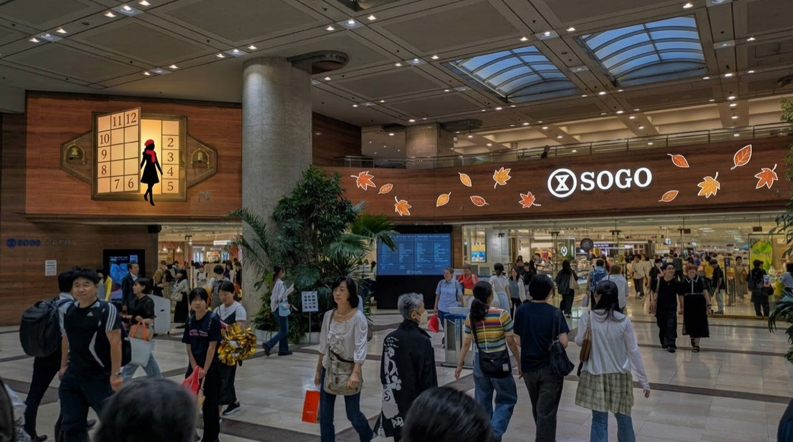
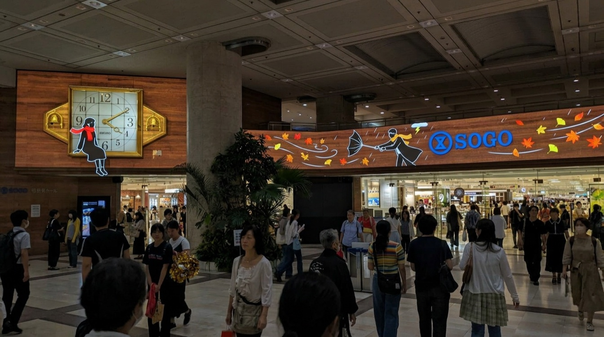
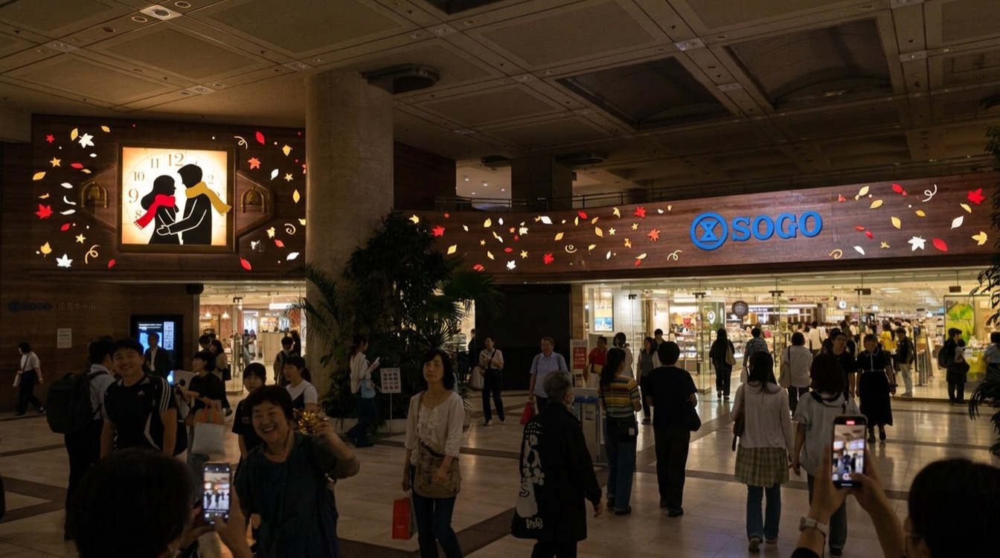
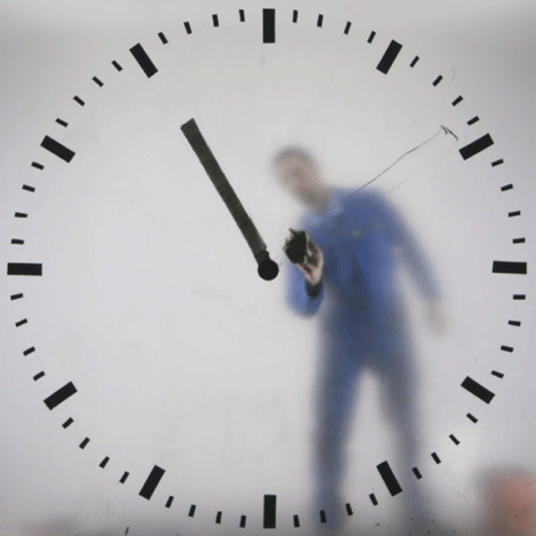
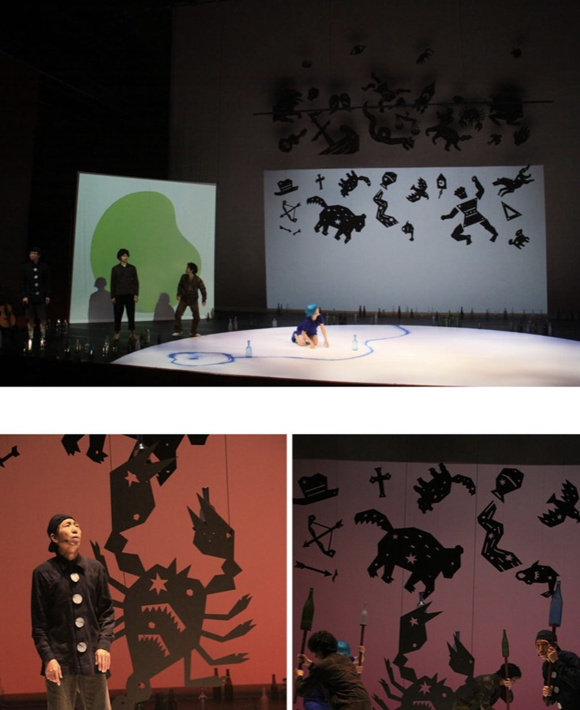

案 01
「時計の下で、待ち合わせ」
“Meet me under the clock”
毎時 · 2〜3分 · 1本のストーリー映像
おしゃれに敏感なカップルが、シルエットだけの姿で、季節のハプニングを乗り越えて時計の下で落ち合います。
百貨店のロビーの時計は、昔から待ち合わせの場所でした。そごう横浜の時計も同じです。この案は、そんな日常のひとコマを物語にします。カップルの顔は一度も見せず、映るのはシルエットと、ファッションアイテムや小物だけ。名前のない二人だからこそ、見る人は自分を重ねられ、マスコットをつくる必要もありません。風や雨、人混みなど、季節そのものが二人の待ち合わせを邪魔し、やっと会えた瞬間には、その季節が魔法に変わります。
ストーリー（秋編）
- 正時。時計のパネルの一枚が扉のように開き、おしゃれな若い女性のシルエットが現れて、扉を閉めます。全身がシルエットなので、色を残した1〜2点のファッションアイテムが引き立ちます。上品なコート、季節のスカーフ、帽子やバッグ、赤い口紅など。
- 待つ。彼女はそわそわと周りを見回し、時計の中を左へ右へと歩きながら、誰かを待つように時計の針を見上げます。
- 突風。秋の大きな風が彼女の髪とコートをなびかせ、色とりどりの落ち葉が右からロビーの端から端まで吹き抜けます。それに合わせて、男性のシルエットが丸まったまま風に吹かれて転がり込んできます。立ち上がって埃を払い、彼なりの秋のコーディネートを見せると、腕時計を見て遅刻に気づきます。
- 天気との戦い。風向きが変わり、彼は向かい風に耐えながら必死に前へ進みます。ところが天気はさらに急変。雨に雷、そしておなじみの、傘との勝ち目のない格闘。
- その頃。彼女は時計の下の縁に腰かけて足をぶらぶら。彼がどんな目にあっているかも知らず、のんきに待っています。
- 到着。秋の天気に2〜3回振り回された末、彼は時計に倒れ込み、彼女を驚かせてから身なりを整えます。彼女の反応は笑いでも、ほっとした喜びでも、どちらでも成立します。
- 二人で。二人が抱き合うと、時計と壁いっぱいに秋の紙吹雪が舞い、季節のお祝いが広がります。そして二人は一緒に時計の中へ入っていきます。
引きの画の合間にクローズアップを挟み、ドラマと迫力を加えます。絵はイラスト調でシンプルに。2Dならではの親しみやすい温かさを大切にします。
季節ごとに、新しいファッションと新しいハプニング
- 冬凍った道、雪合戦の流れ弾、イルミネーションに絡まる。
- 夏花火、日陰から日陰へのダッシュ、凧あげ、公園の遊び。
- 春 · 桜花見客の人混み、花粉症、桜並木の川を舟で渡る。
- Magnet
- 待ち合わせ。そごうの時計が、待ち合わせの場所になります。
- Audience
- ファッション好きのカップル。
- Magic
- ラブストーリーであること。
- Nostalgia
- 時計の扉。そして待ち合わせは、誰もが経験したことのある瞬間です。




